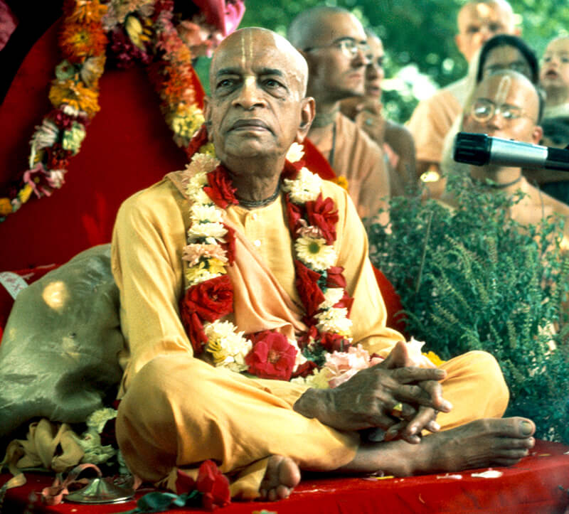
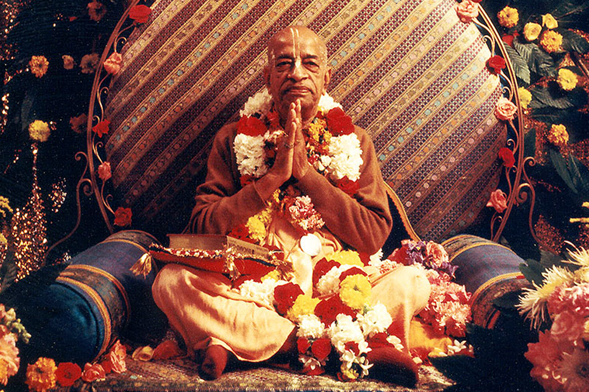

Abhay Charanaravinda Bhaktivedanta Swami (Abhaya Caraṇāravinda
Bhakti-vedānta Svāmī; 1 September 1896 – 14 November 1977) or Srila
Prabhupada, born Abhay Charan De, was an Indian spiritual teacher and
the founder-acharya (preceptor) of the International Society for
Krishna Consciousness (ISKCON), commonly known as the "Hare Krishna
movement". Members of the ISKCON movement view Bhaktivedanta Swami as
a representative and messenger of Krishna Chaitanya.
He has been described as a charismatic leader who was successful
in acquiring followers in many countries including the United States,
Europe and India. His mission was to propagate throughout the world
Gaudiya Vaishnavism, a school of Vaishnavite Hinduism that had been
taught to him by his guru, Bhaktisiddhanta Sarasvati. After his
disappearence in 1977, ISKCON, the society he founded based on using
the Bhagavata Purana as a central scripture, continued to grow. In
February 2014, ISKCON's news agency reported reaching a milestone of
distributing over half a billion of his books since 1965. His
translation of and commentary on the Bhagavad Gita, titled
Bhagavad-gītā As It Is, is considered by ISKCON adherents and many
Vedic scholars as the finest, bona fide translation of Vaishnava
literary works.
Srila Prabhupada was born into a Vaisnava family on 1 September 1896 in Calcutta, India. His parents named him Abhay Charan De (one who is fearless, having taken shelter at Lord Krishna‘s feet.) He graduated from the prestigious Scottish Church College in 1920, with majors in English, philosophy and economics. However, in a display of solidarity with Gandhi’s independence movement against British rule in India, he refused to accept his diploma.
In 1922 he met his spiritual master, Bhaktisiddhanta Sarasvati
Thakura, a prominent scholar in the Gaudiya Vaisnava tradition.
Bhaktisiddhanta requested that he spread the ancient knowledge of the
Vedas in English to the Western countries. Srila Prabhupada was
already married and running a small pharmaceutical business at that
time. His wife was pious and devoted to Lord Krishna, but didn’t share
his enthusiasm for preaching and writing about the philosophy. In the
following years Prabhupada wrote a commentary on the Bhagavad-gita,
and in 1944 started Back to Godhead, an English fortnightly magazine
still published today by his disciples. In 1947 the Gaudiya Vaisnava
Society recognized his scholarship and honored him with the title
“Bhaktivedanta” (one who has realized that devotional service to the
Supreme Lord is the end of all knowledge.)
In 1954 Srila Prabhupada retired from family life and entered
vanaprastha, dedicating himself completely to writing and studying the
Vaisnava classic literatures. He set up residence in Vrindavan, the
birthplace of Lord Krishna. In 1959 he accepted sannyasa, the
renounced order, and began his life’s opus: translating and writing
commentary on the Srimad-Bhagavatam. With beginning the translation of
the Bhagavatam from Sanskrit to English, Prabhupada was preparing to
fulfill his spiritual master’s order to preach in the West.
in 1965 at the age of sixty-nine, he left his homeland on a freight ship bound for the United States of America. He was finally on his way to fulfill his master’s desire to distribute bhakti yoga (the practice of devotion to the Lord) outside the borders of India. While on board the ship, he survived two heart attacks. When he arrived in New York City, he had about seven dollars (in Indian rupees) and his precious books. In the beginning, life for Srila Prabhupada in New York City was not easy, but slowly his spiritual message reached many young people. He chanted the Hare Krishna maha-mantra in Tompkins Square Park and gave lessons on the Bhagavad-gita at the Lower East Side Matchless Gift Shop, where Satsvarupa Goswami first met him. Krishna was providing potency, and after only one year, Srila Prabhupada was able to register the International Society for Krishna Consciousness (ISKCON) as a society. It was the beginning of the spiritual revolution in the West that Srila Prabhupada had already envisaged.

Prabhupada had an extraordinary capacity to preach according to the mentality and culture of the people he was dealing with. He was a wise innovator and empowered his students to teach Krishna consciousness using different approaches: public singing (kirtan), book distribution, university lectures, festivals, food relief programs, establishing temples, developing rural farm communities to protect animals, commissioning new drawings to skilled artists – he was tireless in his efforts. If a preaching strategy was not effective enough by Prabhupada’s standards, Prabhupada and his disciples would explore new possibilities until they got the results Prabhupada wanted. Disciples were energized by Prabhupada’s strength and vision, and found they were capable of doing things they would never have imagined they could do – like running temples, writing articles and books on Vaisnava philosophy, or even teaching in countries far away from home.
In the twelve years that Prabhupada was with us – from the time he arrived in America in 1965 until his departure from this world in 1977 – this charismatic spiritual pioneer developed a resume of incredible successes: he founded a Vaisnava society in the West, ISKCON, which grew into a worldwide confederation of hundreds of temples, centers, educational institutions and farm communities; so successful was Prabhupada’s mission that it eventually spread from the West back to the East, resurging in the Indian holy towns of Vrindavan and Mayapur; he published English translations and commentaries of numerous sacred texts (most available on line), such as the Bhagavad-gita As It Is, Srimad-Bhagavatam and Sri Caitanya-caritamrta; many of Prabhupada’s books have been translated into different languages and are highly appreciated by the academic community for their fidelity and simple clarity of presentation (Bhaktivedanta Book Trust); he circled the globe fourteen times while teaching spiritual knowledge to a diverse populace; he initiated thousands of disciples and interacted comfortably with important personalities; he strongly supported vegetarianism as a basic principle of life and began the ISKCON Food Relief Program (now called Food for Life.) In 1977, at the age of 81, Prabhupada left this world in Vrindavan, India under the loving care of his disciples, who continue his worldwide mission. He is still present through his books, legacy projects, strong memories and loving service of his disciples around the globe. His motto he lived by is easy to remember and apply: “Chant and be happy.”
